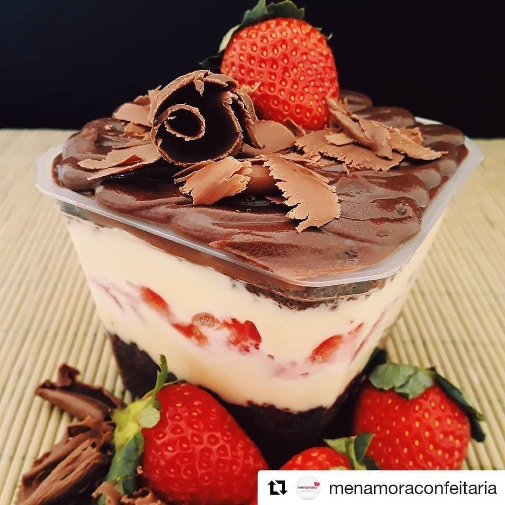
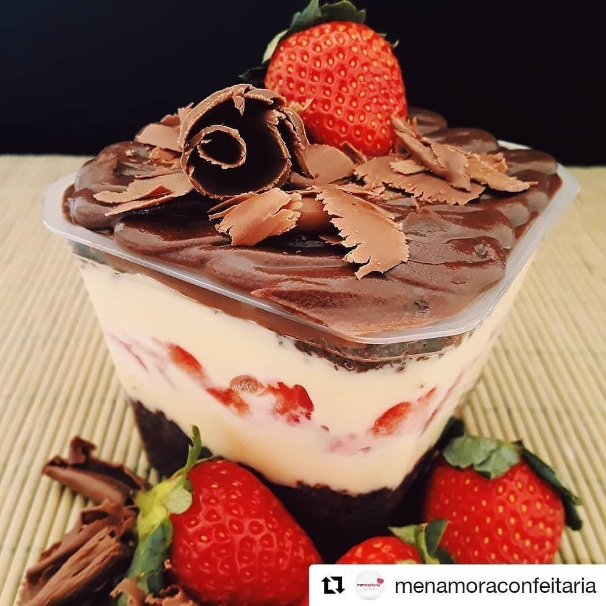

Sobre a Elaine
Bem-vindo ao mundo de Elaine, onde cada prato é preparado com o carinho e o sabor que só a comida caseira pode oferecer. Apaixonada pela arte de cozinhar, Elaine transforma ingredientes simples em verdadeiras delícias que aquecem o coração. Aqui, você encontra receitas autênticas, feitas com amor e dedicação, perfeitas para trazer o conforto e o prazer da comida de casa para a sua mesa.
Para mais informações, entre em contato pelo nosso WhatsApp:
Entre em Contato via WhatsApp 

Aqui Você Encontra as Melhores Delícias, Somente no Docinho da Elaine
No Docinho da Elaine, cada guloseima é feita com amor e dedicação, trazendo as melhores delícias da confeitaria caseira para você. De bolos no pote irresistíveis a tortas e salgados saborosos, garantimos que cada mordida é uma explosão de sabor e carinho. Explore nosso mundo de doces e salgados feitos com ingredientes selecionados e um toque especial de Elaine. Venha descobrir e se apaixonar por cada criação deliciosa!
Surpreenda-se com o Sabor do Bolo de Banana!
O bolo de banana é a combinação perfeita de sabor e simplicidade. Feito com bananas maduras, esse bolo tem uma textura macia e úmida, além de um aroma irresistível que invade a casa. É a escolha ideal para um café da tarde, trazendo um toque de conforto e nostalgia a cada mordida. E o melhor: é super fácil de fazer! Quer aprender a preparar essa delícia em casa? Deslize e confira a receita completa, com dicas para deixá-lo ainda mais saboroso e fofinho!
Experimente o Inesquecível Bolo de Chocolate!
Nada supera o clássico bolo de chocolate, um verdadeiro favorito que agrada a todos os paladares. Com uma massa rica, úmida e repleta de sabor intenso de cacau, este bolo é perfeito para qualquer ocasião. Seja simples ou com uma cobertura cremosa, cada fatia é pura indulgência. E o melhor? Preparar essa delícia é mais fácil do que você imagina! Deslize e descubra a receita completa, com truques para garantir um bolo de chocolate irresistível que vai fazer sucesso na sua mesa!
Descubra o Prazer dos Salgados Caseiros!
Os salgados são uma paixão nacional, perfeitos para qualquer momento, seja em festas, lanches ou reuniões. Coxinhas, empadinhas, esfihas – cada um deles tem seu lugar especial no coração dos brasileiros. Com massas crocantes por fora e recheios suculentos por dentro, os salgados caseiros são uma verdadeira delícia que todo mundo adora. E o melhor: fazer em casa é simples e traz aquele toque de carinho especial. Deslize e aprenda as receitas dos salgados mais populares, com dicas para acertar na massa e no recheio!
Encante-se com as Deliciosas Tortas Salgadas!
As tortas salgadas são uma verdadeira refeição completa, combinando sabor e praticidade em uma única fatia. Perfeitas para o almoço, lanche ou jantar, elas são versáteis e permitem uma infinidade de combinações de recheios, como frango com catupiry, palmito, carne moída, entre outros. Com uma massa leve e um recheio generoso, as tortas salgadas são sempre uma escolha certeira para agradar a todos. Quer aprender a preparar uma torta irresistível em casa? Deslize e descubra receitas deliciosas, com dicas para uma massa perfeita e recheios bem temperados!
Descubra a Delícia do Pudim de Doce de Leite!
Transforme o tradicional pudim em uma experiência ainda mais indulgente com o irresistível sabor do doce de leite. Esse pudim é a combinação perfeita de cremosidade e doçura, com uma textura suave que derrete na boca. Ideal para quem ama sobremesas clássicas, mas não dispensa um toque especial. Quer saber mais? Deslize e descubra a receita completa, com dicas para garantir aquele caramelo dourado e um pudim lisinho que vai encantar todos à mesa!
Doces Momentos em Cada Pote
Descubra o sabor irresistível dos bolos no pote, preparados com todo o carinho por Elaine. Cada camada é uma explosão de sabores, combinando massas fofinhas, recheios cremosos e coberturas deliciosas, tudo embalado de forma prática e encantadora. Perfeito para presentear, saborear ou vender, o bolo no pote é a sobremesa que transforma qualquer momento em uma ocasião especial. Experimente essa delícia feita com amor e leve para casa o melhor da confeitaria caseira.